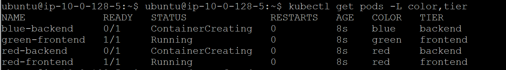

kubectl是操作k8s最常用的命令集。记录一下在学习k8s的过程中用到过的一些与pod相关的命令。
Pod Definition Basics
首先创建一个first-pod.yaml来定义一个pod的内容。这个pod非常简单，只有包含了一个container : httpd:2.4.38.
1 | apiVersion: v1 # The API path for the Pod resource |
通常可能需要了解yaml里面各个节点的定义和用途，可以用下面的这个命令调出来。例如检测spec的定义。
1 | kubectl explain Pod.spec | more |
如果要具体查某个节点的定义可以用kubectl explain <Resource_Kind>.<Path_To_Field>进一步指定。例如：
1 | kubectl explain Pod.spec.containers.image |
Pod的创建，检测与删除
定义好first-pod.yaml之后，可以用kubectl来创建pod。利用下面命令可以创建一个Pod.
1 | kubectl create -f first-pod.yaml |

通过下面的命令可以快速检视pod的状态
1 | kubectl get pod |
READY : 代表着目前就绪的pod的实例数。
Status : Running代表被创建出来的pod实例至少有一个以上是运行状态。更多的Status状态参考这里 Pod phase
| Value | Description |
|---|---|
| Pending | The Pod has been accepted by the Kubernetes system, but one or more of the Container images has not been created. This includes time before being scheduled as well as time spent downloading images over the network, which could take a while. |
| Running | The Pod has been bound to a node, and all of the Containers have been created. At least one Container is still running, or is in the process of starting or restarting. |
| Succeeded | All Containers in the Pod have terminated in success, and will not be restarted. |
| Failed | All Containers in the Pod have terminated, and at least one Container has terminated in failure. That is, the Container either exited with non-zero status or was terminated by the system. |
| Unknown | For some reason the state of the Pod could not be obtained, typically due to an error in communicating with the host of the Pod. |
也可以通过 -o 将详细结果输出到yaml格式中
1 | kubectl get pod first-pod -o yaml | more |
1 | apiVersion: v1 |
删除pod
删除pod可以用下面的命令指定要删除的pod的名字。
1 | kubectl delete pod first-pod |
也可以用下面的命令指定yaml的文件名来删除pod。
1 | kubectl delete -f first-pod.yaml |
Working With Pod Labels, Selectors, and Annotations
Labels 是一组键值对，可以用来与Kubernetes Object一起协作。 例如给Pods增加标签。Label Selector可以通过label来过滤kubernetes objects. 例如增加选择条件在结果集中来显示或者去掉指定label的kuberetes object.
创建namespace - lables
默认情况下k8s的object会分配一个默认的namespace, best practice是按照自己的逻辑提供一个可读性比较强的namespace，可以更好的管理创建出来的object. 可以通过下面的命令来切换namespace :
1 | kubectl create namespace labels # Create namespace |
demo用的pod - labels
这里定义了多个pod，每个pod都有自己的labels, 例如 green-fronted pod打上的标签为2个color:green和tier:web-server。这些pod都赋值了namespace labels。
1 | apiVersion: v1 |
执行命令创建pods
1 | kubectl create -f pod-labels.yaml |
Commands to filter pods info by labels
用 -L 可以指定要显示的lables。
1 | kubectl get pods -L color,tier |
在显示的结果中显示COLOR和TIER

用 -l 或者 –selector 选取包含COLOR的pods :
1 | kubectl get pods -L color,tier -l color |
在 -l 中，使用!可以取反。例如下面选取不包含COLOR的pod, 由于所有的pod都定义了COLOR的label，所以结果为空。
1 | kubectl get pods -L color,tier -l '!color' |
用 = 来指定条件. 例如选取 color=red的pod :
1 | kubectl get pods -L color,tier -l 'color=red' |
用,来增加多个条件 :
1 | kubectl get pods -L color,tier -l 'color=red,tier!=frontend' |
可以选取OR的情况 :
1 | kubectl get pods -L color,tier -l 'color in (blue,green)' |
Commands to work with Annotations
用describe命令来描述一个pod，这个pod的里面包含了Annotations的定义
1 | kubectl describe pod red-frontend | grep Annotations |
用下面的命令可以修改annotations
1 | kubectl annotate pod red-frontend Lab- && |
Managing Pods with Deployments
虽然可以使用命令kubectl create pod -f xxx.yaml 来创建pod，但建议的方式是通过Deployment来创建和管理Pod。例如，在统一管理多个Pod，以提供high aviability和 Disaster Recovery方面，使用Deployments可以达到更好的效果。Deployments有如下的特定：
- 可以为Pods定义一个desired state， Deployment会确保你的cluster进入到deired state.
- 可以配置rolling update的行为，以此来控制有多个pod在何种方式下update.
- State tracking， 可以控制rolling back到之前的版本
Deployment controller会持续的监控k8s cluster的状态，以保证cluster state与设定的dired state相符合。这一点上用命令kubectl create pod -f xxx.yaml是无法做到的。
创建namespace - deployments
跟上面一样，先创建一个namespace
1 | # Create namespace |
创建Deployment manifest
用命令 kubectl create 来创建Deployment manifest
1 | kubectl create deployment --image=httpd:2.4.38 web-server |
用describe可以查看deployment的描述
1 | kubectl describe deployments web-server |
这里默认的配置，replicas:1， deployment在创建pod的时候，数量为1. 可以用kubectl scale deployment的命令提提高replicas的数量。
1 | kubectl scale deployment web-server --replicas=6 |
查看rollout的Log
1 | kubectl rollout history deployment web-server |
可以通过kubectl的editor来修改配置项。默认的editor是vim，也可以替换为其他的editor.为webservice 开放一个:80用于外部访问
1 | kubectl edit deployment web-server --record |
1 | kind: Deployment |
执行下面的命令确保rollout成功
1 | kubectl rollout status deployment web-server |
用kubectl rollout history可以检测rollout的记录。
1 | kubectl rollout history deployment web-server |
用下面的命令可以通过load balancer service的外部端口暴露给公网，这样pod的就可以被访问到了。
1 | kubectl expose deployment web-server --type=LoadBalancer |
然后 watch 命令 来查看状态. 在浏览器上访问公网地址，就可以直接访问到web service上运行的应用了。
1 | watch kubectl get services |
Using Jobs to Manage Pods that Run to Completion
可以使用Jobs和CronJobs来管理Pod,进行batch work和run to completion.
Jobs可以指定Pod的数量，并且保证Pod达到指定的数量，直到completion。如果Pod发生了异常，Jobs会起一个新的Pod，Job也可以并行的运行多个Pod。 当所有的Pod达到completion之后Job就会退出。Job创建的Pod并不会自动删除，这样可以查看他们的log和状态。当completion之后可以删除Job，这样也会删除跟这些Job有关联的Pod。
创建namespace - Job
1 | # Create namespace |
Create Job
用 kubectl create job 命令来创建 job. 命令执行完后，job就会立即执行来创建pod.
1 | kubectl create job one-off --image=alpine -- sleep 30 |
用kubectl get jobs可以查看job的定义。
1 | kubectl get jobs one-off -o yaml | more |
1 | apiVersion: batch/v1 |
- backoffLimit: Number of times a Job will retry before marking a Job as failed
- completions: Number of Pod completions the Job needs before being considered a success
- parallelism: Number of Pods the Job is allowed to run in parallel
- spec.template.spec.restartPolicy: Job Pods default to never attempting to restart. Instead the Job is responsible for managing the restart of failed Pods.
explain job
使用 explain 可以看到job.spec更多的内容
1 | kubectl explain job.spec | more |

观察job 启动pod的行为
创建一个job来启动一个总是fail掉的pod，用来观察job启动pod的过程.
1 | apiVersion: batch/v1 |
创建job的命令
1 | kubectl create -f pod-fail.yaml |
用watch来观察job的情况。
1 | watch kubectl describe jobs pod-fail |
Pod Statuses 会显示 2 Running Pods 并且 Succeeded 总是 0. 代表这虽然Job创建了Pod，但是运行一段时间后Pod都会失败。（只是由于pod-fail执行的是[‘sleep 20 && exit 1’])
在尝试3次以后，已经到了backoffLimit的限制，Job停止创建Pod。
检查Pod的状态。可以看到Pod的状态READY 0/1, 代表Pod并没有ready.
1 | kubectl get pods |
CronJob
创建一个CronJob, 每分钟执行一次。Cron的使用方法可以参考cron.
1 | apiVersion: batch/v1beta1 |
同样用kubectl create来创建
1 | kubectl create -f cronjob-example.yaml |
CronJob按照模板来创建Job，由这个Job来负责Pod的创建。
1 | kubectl describe cronjob cronjob-example |
参考
Kubernetes Pod Design for Application Developers
Sonic Guo